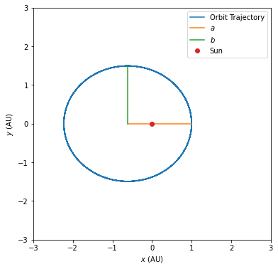

Problem 3 - Answers¶
import numpy as np
import matplotlib.pyplot as plt
from scipy.integrate import solve_ivp
from scipy import constants as CONSTANTS
Define the constants we’ll use throughout. It’s best practice to name constants in ALL_CAPS
M_EARTH = 5.972E24 # Mass of the earth
M_SUN = 1.98847E30 # Mass of the sun
AU = CONSTANTS.astronomical_unit
PI = CONSTANTS.pi
GRAV = CONSTANTS.gravitational_constant
YEAR = CONSTANTS.year
Kepler’s First Law¶
# Initial state vector for the planet
X0 = np.array([1 * AU, 0.0, 0.0, 35.0E3])
# Length of time to evaluate for in years
n_years = 20
# Time points at which to evaluate (using 100 points/year)
t_eval = np.linspace(0.0, n_years * YEAR, n_years * 100)
def update_function(t, X):
# Get coordinates and velocity
x_pos, y_pos, x_vel, y_vel = X
# Calculate radial distance
radial_dist = np.hypot(x_pos, y_pos)
# Calculate each component of acceleration
x_acc = - GRAV * M_SUN * x_pos / (radial_dist ** 3)
y_acc = - GRAV * M_SUN * y_pos / (radial_dist ** 3)
return [x_vel, y_vel, x_acc, y_acc]
# Integrate the equations
solution = solve_ivp(update_function, [0.0, t_eval[-1]], X0, method='Radau', t_eval=t_eval)
# Get the solution
x, y, vx, vy = solution.y
To find \(a\) and \(b\) we need to fit to something that looks like a line \(v=mu+c\). We rearrange to get $\( y^2 = b^2 - \frac{b^2}{a^2}x^2, \)\( so if we fit to \)v=y^2\( and \)u=x^2\( we'll find \)b=\sqrt{c}\( and \)a=\sqrt{-c/m}\(. This is okay because \)m$ is negative.
We must also shift the coordinates so that the origin is the centre of the ellipse, not the sun (the focus of the ellipse). We find the x coordinate of the centre by finding the x coordinate where y is maximum.
# Prepare the data
v = y ** 2
u = (x - x[np.argmax(y)]) ** 2
# Perform the fit
m, c = np.polyfit(u, v, 1)
# Getting a and b, in units of AU
print("a=%.2f AU, b=%.2f AU" % (np.sqrt(- c / m) / AU, np.sqrt(c) / AU))
a, b = np.sqrt(- c / m) / AU, np.sqrt(c) / AU
a=1.61 AU, b=1.49 AU
# Plot the orbit
fig, ax = plt.subplots(figsize=[6, 6])
ax.plot(x / AU, y / AU, label='Orbit Trajectory')
# Add the semi-minor/major axes as a check
ax.plot([x.max() / AU - a, x.max() / AU], [0.0, 0.0], label='$a$')
ax.plot([x.max() / AU - a, x.max() / AU - a], [0.0, b], label='$b$')
ax.plot([0.0], [0.0], 'o', label='Sun')
ax.set(xlabel='$x$ (AU)', ylabel='$y$ (AU)', xlim=[-3, 3], ylim=[-3, 3])
ax.legend()
plt.savefig('./kepler_example_orbit.pdf')
plt.show()
